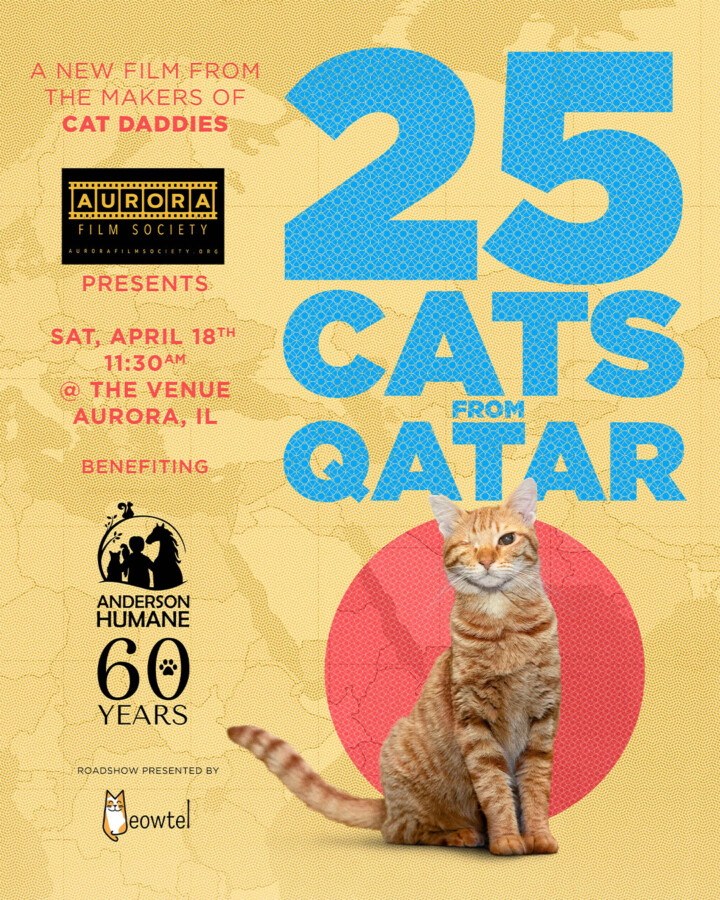

Aurora Film Society & Meowtel present: 25 Cats From Qatar
25 Cats From Qatar [2025 / Mye Hoang]
When Katy McHugh, owner of Milwaukee’s Sip and Purr Cat Café, learns of the feral cat crisis in Doha, Qatar, she creates a brave and unsanctioned plan to fly 25 cats from Doha back to Wisconsin for adoption. From Mye Hoang the director of “Cat Daddies”, this film offers a heartwarming, urgent look at strangers overcoming barriers to save lives, highlighting the global struggle for animal welfare.
The Aurora Film Society
Since 2018, the Aurora Film Society (AFS) has been broadening our community’s collective horizons by screening great movies together. For $70 a year, our subscribers are shown 12 carefully selected & curated movies, works that are historically important & groundbreaking, works that provide a window into far-flung cultures, works that are sometimes overlooked or unavailable to most audiences. The AFS puts a special emphasis on showing the sorts of luminous & idiosyncratic stories from beyond the mainstream that people of the Fox Valley area would normally not have a chance to see in a theatrical setting.
For questions and/or to subscribe, please email aurorafilmsociety@gmail.com
To see our current schedule & past movies, visit www.aurorafilmsociety.org
Door open at 11:00AM. Program begins at 11:30AM.